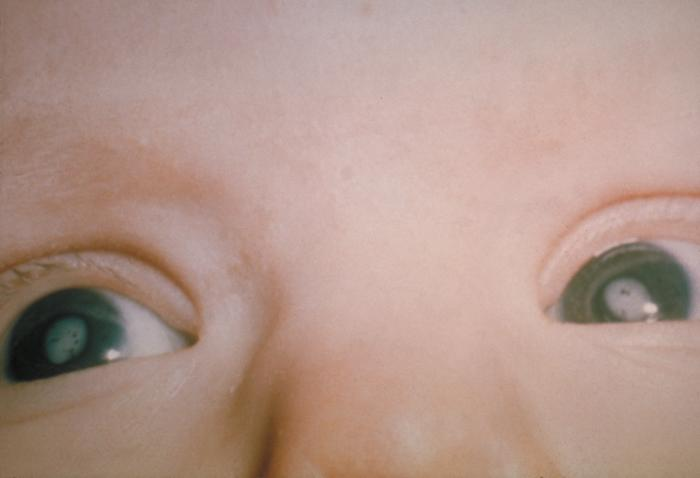
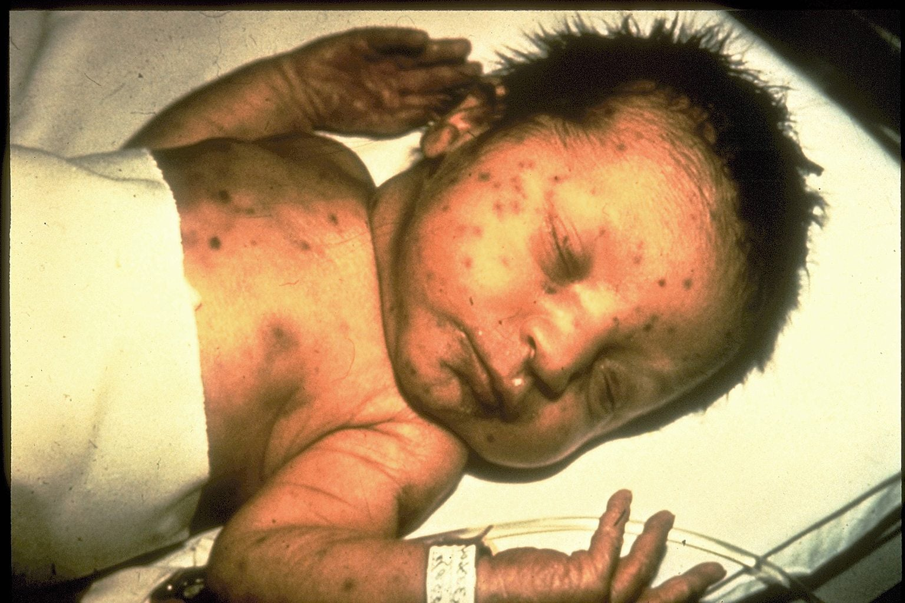

Rubella Virus Infection
During Pregnancy
Impact on Fetal Outcome: A Cross-Sectional Study in Baghdad
Researchers:
Hawraa Jabar, Tabark Saleh, Aya Ayad,
Ali Rahman, Saja Zuhair, Zahra Salem,
Hussein Saad, Radwan Mohammed,
Heba Salam, Muntadher Ali
Supervisor:
Assist. Lec. Ayat Abbas Mohammed
OSOL AL-ELM University
College of Health and Medical Technologies
Introduction: What is Rubella?
Rubella (German Measles) is a contagious respiratory infection. It typically presents as a mild, self-limiting disease in children and adults, characterized by a distinct maculopapular rash.
- Name Origin: From Latin meaning "Little Red".
- Transmission: Airborne respiratory droplets.
- Incubation: 12 to 23 days before symptoms appear.

Mild for the mother, devastating for the fetus.
Morphology & Structure
- Shape: Spherical to pleomorphic (50–70 nm).
- Genome: Single-stranded, positive-sense RNA [(+)ssRNA].
- Envelope: Host-derived lipid bilayer containing viral spikes.
Effect on Pregnancy: The Teratogenic Risk Zone
If maternal infection occurs during the first 10-12 weeks of gestation, the virus crosses the placental barrier unhindered.
*Risk drops significantly to 10-20% if infection occurs after the 16th week.
Pathogenesis & Spread
Maternal Infection
- Virus enters respiratory tract.
- Replicates in nasopharyngeal cells and regional lymph nodes.
- Viremia occurs (5-7 days post-infection), spreading to internal organs and skin.
Fetal Infection
- During viremia, virus infects the placenta (Placentitis).
- Enters fetal circulation causing widespread cellular damage.
- Inhibits cellular mitosis and induces apoptosis in developing fetal organs.
Congenital Rubella Syndrome (CRS)
When the virus infects the developing fetus, it results in a specific group of severe birth defects known as the Classic Teratogenic Triad.
Let's explore these major conditions visually ⬇
1. Ocular Defects (Cataract)

Development of Cataracts (clouding of the lens), Microphthalmia, and Congenital Glaucoma, often affecting both eyes.
2. Auditory Defects (Deafness)
Sensorineural Hearing Loss is the most common standalone defect, affecting up to 60% of infected infants.
3. Cardiac Defects & High Risk Windows

Structural heart conditions, primarily Patent Ductus Arteriosus (PDA), coupled with microcephaly risks in the first trimester.
Neurological & Late Manifestations
Neurological Impact
- Microcephaly (abnormally small head).
- Intellectual disability and developmental delays.
- Progressive Rubella Panencephalitis (PRP): A rare, fatal late-onset neurological deterioration.
The Autism Link
Studies (e.g., Stella Chess) found a significantly higher prevalence of autism spectrum behaviors in children born with CRS compared to the general population.
Relationship Between RuV & Vitamin A
The liver is the principal organ responsible for Vitamin A homeostasis, storing approximately eighty percent of total body reserves, primarily within hepatic stellate cells.
- Rubella virus targets the respiratory system but significantly disrupts liver function, causing issues ranging from jaundice to rare hepatic failure.
- This localized cellular destruction triggers an uncontrolled release of stored retinoids right into the blood.
- This cascade induces a highly volatile state of Functional Hypervitaminosis A.
Clinical Overlaps & Retinoid Excess:
- Neurological: Excess retinoic acid crosses the blood-brain barrier, causing headaches and increased intracranial pressure.
- Musculoskeletal: Retinoids trigger bone resorption and synovial inflammation, leading to joint pain.
- Hepatic: Retinoid overload exacerbates liver fibrosis and impairs mitochondrial function.
Laboratory Diagnosis & Screening
Serological Rapid Cassette Testing
In our laboratory workflow, Rubella-specific IgG and IgM antibodies were detected using a standardized Torch test cassette immunoassay:
- Procedure: $10\ \mu\text{L}$ of patient serum is added to the sample well using a micropipette.
- Buffer Matrix: $70\ \mu\text{L}$ of specialized reagent buffer from the kit is introduced.
- Reaction Time: Left for exactly 15 minutes to allow proper lateral flow reaction.
Confirmatory Diagnostics
- IgG Avidity Test: Utilized in unclear gestational conditions to distinguish between active acute infections (Low Avidity) and historical baseline exposure (High Avidity).
- RT-PCR: Molecular detection of viral RNA in amniotic fluid or blood. The gold standard to definitively confirm prenatal CRS.
Rubella Virus Treatment Protocols
No Specific Antiviral
There is no specific antiviral treatment to eradicate the virus. Medical management focuses entirely on supportive therapies.
Symptomatic Relief
Paracetamol serves as the primary safe option for fever and discomfort across all profiles, including pregnant women. Antihistamines like Cetirizine alleviate rash itching.
Strict Isolation
Isolation for approximately one week after the maculopapular rash appears is mandatory to halt immediate transmission within public domains.
Prevention & Immunization Strategies
Since no specific cure exists, public medical efforts are entirely focused on preemptive immunological defense.
- The MMR Vaccine: A highly effective 2-dose schedule using the live-attenuated Wistar RA 27/3 strain to provide robust, lifelong immunity.
- Mechanism: It closely mimics natural infection, inducing an incredibly strong systemic and mucosal immune barrier.
Critical Pre-Conception Controls:
- Pre-Marital Screening: Non-immune women must be systematically identified via laboratory antibody tracking before approval.
- Strict Contraindication: Being a live vaccine, MMR is strictly forbidden during pregnancy. Women must avoid conception for 28 days post-injection.
Aims of the Study
1. Clinical Detection
Detect Rubella-specific antibodies (IgG/IgM) among pregnant women with obstetric complications.
2. Risk Evaluation
Understand the direct correlation between RuV infection and rates of recurrent miscarriages.
3. Public Awareness
Emphasize the critical need for pre-marital screening and MMR vaccination coverage.
Research Methodology & Procedure
Study Design & Sample
- Type: Cross-sectional descriptive study.
- Sample: 75 pregnant women with history of obstetric complications.
- Location: Hospitals in Baghdad Governorate.
Laboratory Work
Venous blood was drawn and centrifuged to extract serum.
We utilized the Rubella IgG/IgM Rapid Test Cassette (lateral flow immunoassay) for antibody detection.
Results
Demographic Data & Miscarriage Rate
Descriptive statistics of the 75 participating women:
- Mean Age: 27.7 ± 7.43 Years (Range: 16-46).
- Mean Miscarriages: 1.61 per participant.
- Mean Live Births: 2.54 per participant.
Recurrent Miscarriage Rate
Results: Miscarriage by Age Group
Distribution of miscarriage cases across age groups among the 75 participants.
Peak Incidence
Key Finding: The 22–27 age group recorded the highest number of cases, consistent with peak reproductive activity.
Results: Urban vs. Rural Residency
Comparison of mean live births and miscarriages based on residency area.
Statistical Insight: The T-test showed a marginally significant difference favoring rural residents for live births ($p = 0.050$), potentially due to lower urban stressors.
Results: Impact of Physical Activity
Maternal physical activity levels correlated with pregnancy outcomes.
Insight: Descriptive data suggests better outcomes for women with stronger physical activity, highlighting the importance of maternal fitness.
Discussion
High Miscarriage Rate
The 56.3% recurrence rate emphasizes the silent burden of TORCH infections, specifically Rubella, in local communities.
Age Factor
The mean age (27.7) falls perfectly within the prime reproductive window, making preconception care absolutely vital.
Discussion (Cont.)
Environmental Factors
Urban pollution, stress, and dietary shifts in Baghdad may contribute to higher complication rates compared to rural areas.
Physical Activity
A physically active lifestyle showed a protective trend, correlating with better overall maternal and fetal health outcomes.
Recommendations
1. Mandatory Screening
Implement strict, compulsory pre-marital Rubella antibody (IgG/IgM) testing across all health centers.
2. Immunization
Enhance the coverage of the MMR vaccine for women of childbearing age, ensuring immunity before conception.
3. Public Education
Launch awareness campaigns focusing on the importance of lifestyle and moderate physical activity during pregnancy.
Conclusion: Key Study Takeaways
1. High Prevalence
The study identifies a significant incidence of recurrent miscarriage (56.3%) among pregnant women in Baghdad.
2. Statistical Insights
While descriptive trends were noted regarding rural residence and physical activity, most factors aside from a marginal difference in live birth rates did not reach statistical significance.
3. Strategic Need
The findings emphasize an urgent necessity for targeted research to pinpoint the specific factors contributing to pregnancy loss within the Iraqi population.
Thank You For Listening!
Any Questions?